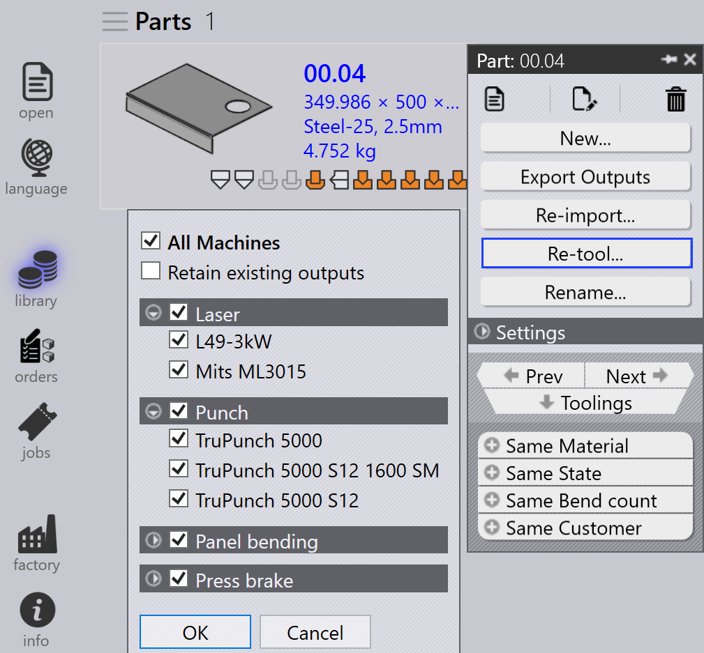
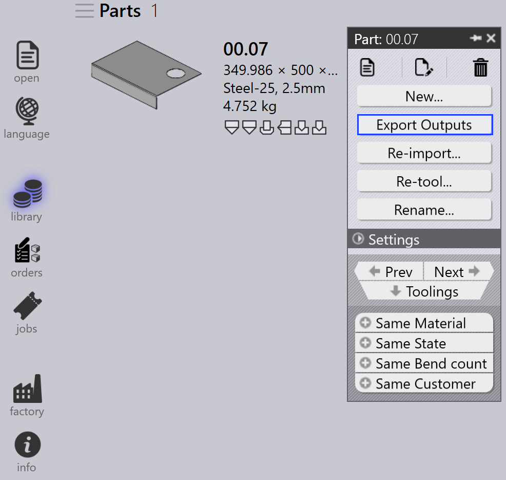

Panel dielu
Táto sekcia vysvetľuje akcie súvisiace s dielom ako Opätovný import…, Zmeniť obrábanie…, Premenovať…, Exportovať výstupy, atď., používané na správu inštancií dielov.

|
|


Opätovný import…
-
Kliknite pravým tlačidlom na ľubovoľný diel a kliknite na Opätovný import….

-
Všetky inštancie obrábania zvoleného dielu naprieč všetkými strojmi sú vymazané vrátane automaticky obrábaných a manuálne obrábaných inštancií.
-
Existujúce výstupné súbory (CAD, Bend a Cut) sú odstránené.
-
Diely sú znovu importované a nová validácia CAD a obrábanie sú aplikované pre všetky stroje.
-
Nové výstupné súbory sú vytvorené na základe aktualizovaného výsledku obrábania.
Zmeniť obrábanie…
-
Kliknite pravým tlačidlom na ľubovoľný diel a kliknite na Zmeniť obrábanie….

-
Všetky stroje sú predvolene začiarknuté a zoskupené ako Laser, Punch, Panel a Press brake.
-
Kliknite na OK na pokračovanie. Toto odstráni automaticky obrábané aj manuálne obrábané inštancie pre zvolené stroje a odstráni súvisiace výstupné súbory.
-
Keď je začiarknuté políčko Zachovať existujúce výstupy, len diely, ktorých výstupy boli odstránené skôr, budú opätovne obrábané, ostatné výstupy zostávajú nedotknuté. Ak nie je začiarknuté, všetky výstupné súbory pre zvolené stroje sú odstránené a regenerované počas opätovného obrábania.
|
Premenovať…
Táto sekcia vysvetľuje, ako premenovať jeden alebo viacero dielov v TruSmartCAM.
-
Kliknite pravým tlačidlom na diel a kliknite na Premenovať….

-
Zobrazí sa dialógové okno potvrdenia premenovávania zobrazujúce aktuálny názov dielu.
-
Zadajte nový názov a kliknite na ikonu začiarknutia ✓ na potvrdenie alebo kliknite na ikonu kríža ✗ na zrušenie operácie premenovania.

-
Na premenovanie viacerých dielov vyberte všetky požadované diely, potom kliknite pravým tlačidlom na ktorýkoľvek z nich a kliknite na Premenovať….
-
Zobrazí sa dialógové okno potvrdenia s celkovým počtom zvolených dielov.
-
Pre každý diel zadajte nový názov a kliknite na ikonu začiarknutia ✓ na potvrdenie jeden po druhom.
-
Ak bol nejaký diel omylom zvolený, kliknite na ikonu kríža ✗ na zrušenie. Alternatívne môžete kliknúť pravým tlačidlom na diel a kliknúť na Zrušiť premenovanie na preskočenie premenovania.
Exportovať výstupy
Táto možnosť exportuje výstup dielu do cieľa nakonfigurovaného v Pôvodné nastavenia. (Pozrite si Bend Settings a Cut Settings)
Umiestnenie výstupu je definované samostatne pre Bend, Fold a Cut v ich príslušných nastaveniach výstupu. Všetky obrábania priradené k ohybu, skladaniu a rezaniu sú exportované pre celý diel.

Ako je zobrazené nižšie, exportované súbory sú uložené v špecifikovanom priečinku
(napríklad C:\PraxData\Out\Reports).

| Exportované súbory závisia od typu operácie. Pre operácie Bend a Fold sú generované súbory NC a správy. Pre operácie Cut a Punch sú exportované len súbory dielov. |
Priradenie materiálu dielu
Diely so stavom Materiál nie je priradený je potrebné aktualizovať pred ďalším spracovaním. Kroky nižšie vysvetľujú, ako priradiť materiál.
-
Kliknite pravým tlačidlom na diel, ktorý zobrazuje stav Materiál nie je priradený a vyberte Priradiť materiál.

-
Otvorí sa okno Priradiť materiál.

-
Dialógové okno má štyri sekcie:
-
Návrhy - Automaticky navrhuje surové materiály na základe hrúbky importovaného dielu.
-
Všetky materiály - Vypíše všetky typy materiálov definované v TruSmartCAM.
-
Všetky surové materiály - Zobrazuje všetky surové materiály dostupné v systéme.
-
Použité surové materiály - Zobrazuje naposledy použité surové materiály pre rýchly prístup.
-
-
Môžete použiť pole Hľadať… (Ctrl+F) hore na rýchle nájdenie materiálov. Napríklad zadajte "steel" na zobrazenie všetkých zodpovedajúcich materiálov naprieč tromi sekciami.
-
Z filtrovaného zoznamu vyberte požadovaný materiál (napr. Steel-25) zo zoznamu Raw-Material.
-
Zvolený materiál bude priradený k dielu.
Smer valcovania
Smer valcovania sa vzťahuje na orientáciu zrna v diele, čo môže ovplyvniť spôsob, akým je diel rezaný a spracovaný. Táto možnosť vám umožňuje špecifikovať Smer valcovania pre diel v knižnici dielov. Na základe zvoleného smeru bude diel umiestnený v správnej orientácii pre rezanie na dostupných strojoch.
-
Kliknite pravým tlačidlom na ľubovoľnú dlaždicu dielu v knižnici dielov alebo okne úlohy.
-
Vyberte preferovaný smer valcovania:
-
Žiadne
-
Horizontálne
-
Vertikálne

-
-
Diel je automaticky opätovne obrábaný pre všetky dostupné rezacie stroje na základe zvoleného smeru valcovania.
-
Dlaždica dielu zobrazí zvolený smer valcovania ako je zobrazené nižšie: